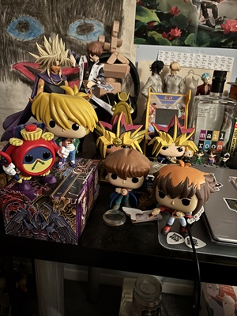
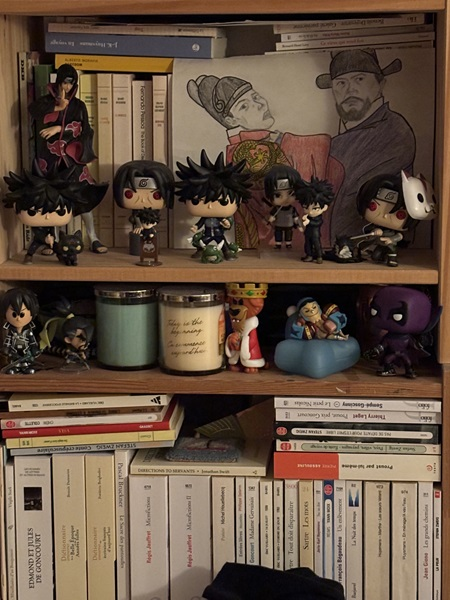
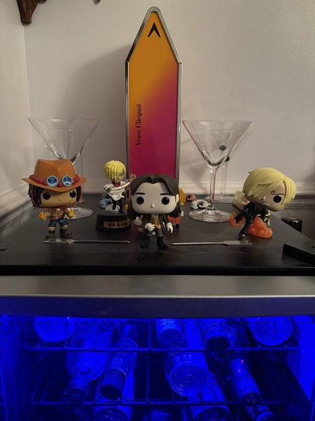
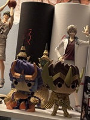

The Organic Method: How I 'organize' my Funko Pop! figures
There are innumerable ways to organize Funko Pop! figures, ranging from idiosyncratic to alphabetical, from strict to fluid. My method is to not have a method (for the most part)!
I will organize my Funko Pop! figures according to fandom when I have more than one from the same franchise. An example is my collection of Funko Pop! figures from the Yu-gi-oh! franchise.
Another example is my mom's collection of Itachi ( Naruto ) and Fushiguro Megumi ( Jujutsu Kaisen ) figures (these characters are from two different series, but she has multiple versions of each character and gathers them together for that reason).
However, I typically gather them on any available space: desks, fridges, tv tables, record players, etc. I find my organization evolves organically as I add more figures or rearrange my space. The choice of where to put each figure is more according to whim than a strict system.
Please click through the following thumbnails for more examples of my ad hoc organization style!
> >Tips and tricks for Funko Pop! display
Possible display and organization ideas:
- Bookshelves and other shelving units
- Acrylic display risers
- Stacking boxes of Funko collectibles
- Research how others in the Funko Pop! collecting community are organizing their collection!
There are several YouTube channels run by collectors with large Funko collections. They post tutorials and tips on how to approach organization. They also have videos where they review subscribers’ collections and provide specific tips and ideas. Check out the following links to a few of their channels!
10 Things You Should Know If You Collect Funko Pops!
Rating Subscribers Funko Pop Collections 2!
My Entire Funko Pop Collection Tour
Check out these videos of two Guinness World Record holders for largest Funko collections. In their video tours, you will see examples of how extremely large collections can be organized and displayed!
David Mebane - Largest Funko Pop! Collection - Guinness World Records
Paul Scardino - NEW: Largest Collection of Funko Pop! Figures - Guinness World Records